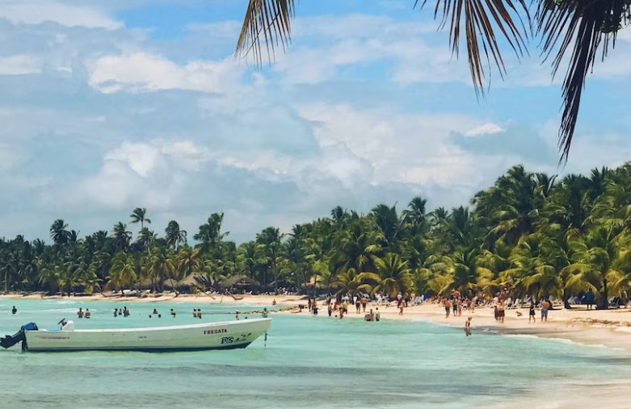
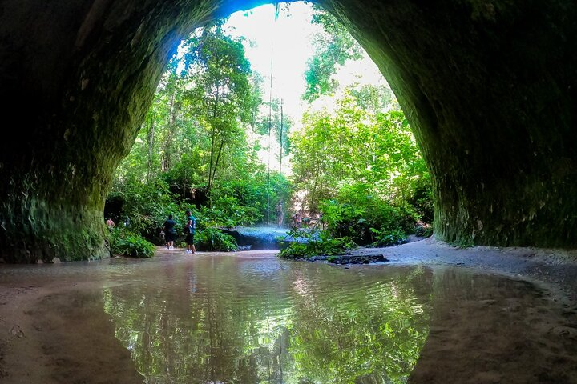

A cidade de Manaus é o principal centro econômico, político e demográfico do Norte do Brasil. Está localizada em plena Floresta Amazônica, bioma de grande biodiversidade. Manaus é um município da Região Norte do Brasil. É a capital e principal cidade do estado do Amazonas.
Ao procurar onde ficar em Manaus o turista pode ficar um pouco perdido,
sem saber qual o melhor bairro para reservar sua hospedagem.
Os
hotéis em Manaus não ficam concentrados em um lugar que seja unanimidade
entre os visitantes.
Na capital do Amazonas, até mesmo os bairros
mais populares entre os turistas não possuem muita variedade de
hospedagens, o que dificulta ainda mais a escolha.
Mas indicamos alguns:
Cidade mais cosmopolita da região Norte do Brasil, a antiga “Paris Brasileira” é famosa por ser a residência da Floresta Amazônica. De beleza sem fim, vida cultural intensa, saborosa gastronomia e, claro, gigantesca riqueza natural, a capital amazonense tem muito a oferecer a quem a escolhe como destino. Então, que tal descobrir agora mesmo o que fazer em Manaus?
Quando a gente pensa em Manaus e no Amazonas de forma geral, a
primeira que vem à nossa mente são as tribos indígenas, certo? E,
por isso mesmo, vale demais a pena aproveitar a estada na cidade
para conhecer melhor a cultura indígena. Algumas tribos estão
abertas à visitação, como é o caso da tribo Dessana Tukana, na
reserva do Tupé.
O encontro com os(as) turistas se dá em um
espaço que não necessariamente é o lugar onde os indígenas moram,
mas que visa estimular o intercâmbio cultural. Eles falam bastante
sobre os seus instrumentos artesanais, costumes e rituais. Ao mesmo
tempo, exibem os corpos pintados e enfeitados por acessórios feitos
de sementes; na cabeça, o tradicional cocar. Aliás, você sabia que o
cocar pode ter vários significados? De acordo com as explicações
deles, podem ter a ver com força, ligação com a natureza e ciclo da
vida, além de também poderem representar um troféu por algum ato de
coragem.
Prepare-se, pois você terá a chance de participar de
danças, pinturas, experimentar comidas e de mergulhar na história e
nos hábitos deste povo tão importante para o nosso país. Contudo, a
nossa dica é realizar este passeio sempre com um um guia ou com o
apoio de uma agência de viagens, combinado?
O passeio de barco em Manaus é quase uma obrigação para os viajantes
que estão na capital. Não dá para estar tão pertinho das águas do
Amazonas e seus rios e deixar de conhecer. É uma experiência
memorável, além disso, alguns passeios realizam paradas em locais
maravilhosos. Há também almoço tradicional em restaurantes
flutuantes e mergulho com botos-cor-de-rosa.
Além de todas as
possibilidades oferecidas pelos passeios de barco na floresta
Amazônica, você também se envolve com a natureza. Conhece de
pertinho a rica fauna e flora da floresta e descobre uma pequena
parte de toda a magnitude que é a Amazônia.
Dificilmente
retornará do passeio sem boas lembranças e refletindo sobre o
cuidado com o meio ambiente.
Muitas pessoas não sabem que aqui no Amazonas existe praia, mas tem sim. Só não é de água salgada como outros estados do Brasil, são praias de água doce.
Belas cachoeiras em meio à vegetação e misteriosas grutas e cavernas fazem desse lugar um passeio imperdível para quem está em Manaus.
Manaus e a Amazônia são visitáveis o ano inteiro — a chuva, aqui, é parte da experiência. Mas se você quiser pegar menos chuva, vá entre junho e novembro. O calor é constante. A temperatura mínima é sempre superior a 22ºC, e máxima, nunca inferior a 30ºC, em qualquer mês. As chuvas, porém, costumam dar um refresco logo depois que caem.